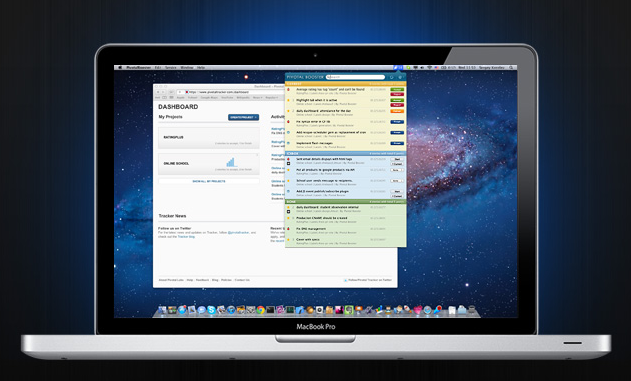
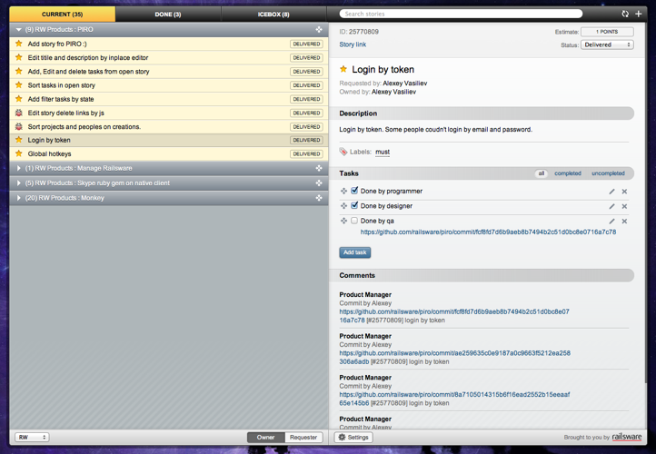

PIRO: the Rocket for PivotalTracker account(s)
Alexey Vasyliev
Mar 12, 2012
PivotalTracker - Simple, Agile Project Management Software & Team Collaboration
Pivotal Booster

We already have one tool for PivotalTracker. Why we need another?
Pivotal Booster
- Only for Mac OS;
- Need know Object C to contribute;
- Code is closed for another mac os developers;
- Maybe you want another workflow?
PIRO
PIRO is a Google Chrome extension for you PivotalTracker account(s)
PIRO: Features
- You can use it only with Google Chrome. But Google Chrome work on Windows, Linux, Mac OS and Android 4;
- Multilogin;
- Popup and fullscreen modes;
- Only your stories (owner or requester);
- Open Source (!!!);
PIRO: Technologies
- CoffeeScript;
- JQuery, jQuery UI;
- Hogan.js (JavaScript templating from Twitter);
- Chosen (http://harvesthq.github.com/chosen/, for selects);
- Jeditable (Edit In Place Plugin For jQuery);
- Ruby (rake tasks, guard watcher);
PIRO: Summary

- Web Site: piro.railsware.com/
- Source code: https://github.com/railsware/piro
Thank you!